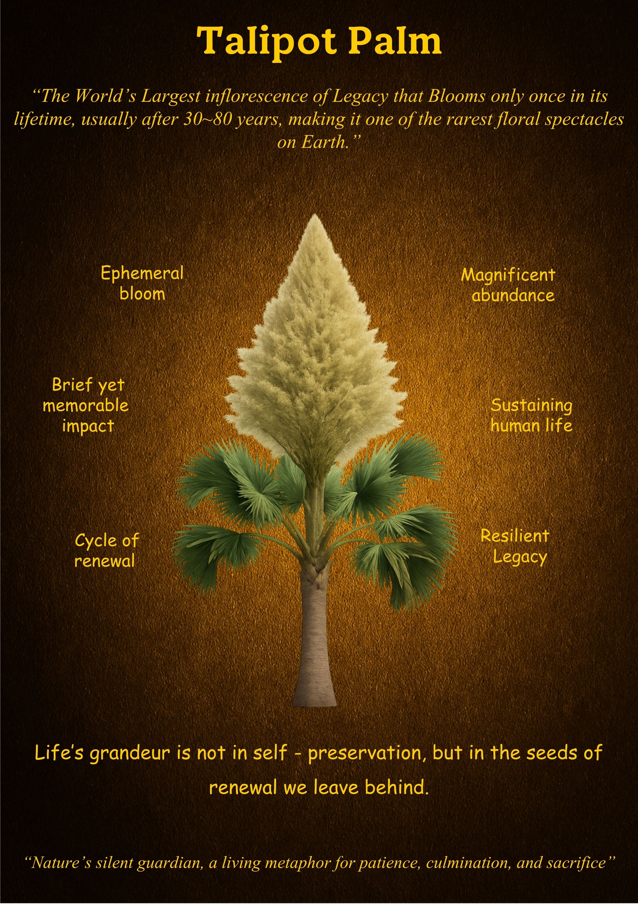

Talipot Palm
"Nature's silent guardian, a living metaphor for patience, culmination, and sacrifice."
What is Unique
The Talipot Palm is the producer of the world’s largest inflorescence—a floral display so massive it can contain up to 24 million flowers. It is a monocarpic giant, meaning it spends 30 to 80 years growing in total silence, gathering every ounce of its life force for a single, breathtaking event. It blooms only once in its lifetime, and in doing so, it creates one of the rarest spectacles on Earth.
Overall Synthesis
This exhibit is an exploration of "The Grand Finale." The Talipot Palm does not believe in a slow decline; it believes in a triumphant conclusion. Its entire existence is a slow, steady climb toward a peak of magnificent abundance. It teaches us that some legacies require a lifetime of preparation, and that the value of a life is not measured by its length, but by the magnitude of its eventual offering.
Its Functioning Systems
Principles & Wisdom
The Talipot Palm confronts us with the concept of Sacrifice for Renewal. In a culture that values self-preservation above all else, the Palm reminds us that there is a higher grandeur in letting go. Its wisdom suggests that we should not fear the end if our lives have been a preparation for a "Resilient Legacy." It asks us: Are you storing your energy to merely exist, or are you preparing for a contribution that will sustain those who come after you?